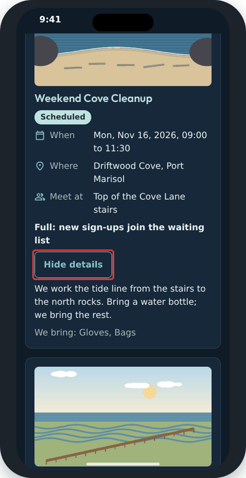

🌗 Lesson 2.5: Responsive, Platform-Specific and Themed UI
Shoreline Crew will not only run on one phone held upright at noon. It will open on small phones and big ones, on tablets, in a browser window you can drag wider, on iPhones and Android phones that do some things differently, and at night, when half your volunteers have dark mode on. In this lesson the app learns to notice all of that: it lays its cards out by the room it has, it knows which platform it is on when that matters, and it gets a real dark mode, with every color it uses given a night-time value.
🎯 Learning Objectives
By the end of this lesson, you will be able to:
- Read the window's size with
useWindowDimensions, choose a layout with breakpoints in density-independent pixels, and explain whyDimensions.getat the top of a file goes stale - Handle real platform differences with
Platform.OS,Platform.select, platform-only props and platform files (.ios.tsx,.android.tsx,.web.ts), and know when not to - Follow the phone's light or dark setting with
useColorScheme, and design a dark set of color roles that passes the same contrast checks as the light one - Build a typed theme: palettes TypeScript keeps complete, a
useThemehook, and styles that are made once per theme - Give the navigator and the status bar the theme's colors, and fix the web preview's server-drawn first page
📦 Code for this lesson
Starting code: lesson-08-start.zip · Finished code: lesson-08-end.zip. Each folder has a README with the commands to run it.
In This Lesson
👋 Welcome: One App, Many Screens
On the web you have media queries for screen size, prefers-color-scheme and CSS variables for dark mode, and one browser engine at a time. React Native has none of those as CSS. Instead, everything is a value your components read while they render:
- Size is a number from a hook: the window's width and height, which change when a tablet turns, a foldable opens, an iPad splits its screen or you drag the web preview wider.
- Platform is a value too:
'ios','android'or'web', for the few places where the platforms really differ. - Dark mode is the phone's setting, read by a hook; there is no stylesheet that swaps itself. If a color was baked into a style when the file loaded, it stays a daytime color.
Why it matters for your work: "it looks broken on my tablet" and "it blinds me at night" are some of the most common bug reports a new app gets, and app stores show screenshots from both phones and tablets. A layout that adapts and a dark mode that was designed (not inverted) are the details reviewers and clients notice.
Why it matters for the volunteers: a crew leader checks the list at five in the morning before a sunrise cleanup, with the phone in dark mode; an organizer plans the week on a tablet at the kitchen table. Both should get an app that looks like it was made for them.
✅ What carries over
The ideas are the web's: breakpoints, design tokens, light and dark sets of the same tokens, "mobile first". What is new is where they live (hooks and TypeScript objects instead of CSS) and one trap the web preview adds, which you will meet and fix.
📐 Screen Size Without Media Queries
useWindowDimensions() returns the size of the window your app draws in, and re-renders your component whenever it changes:
import { useWindowDimensions } from 'react-native';
import { AppText } from '@/components/AppText';
// The window right now; the component draws again whenever it changes size
export function WindowSize() {
const { width, height, fontScale, scale } = useWindowDimensions();
return (
<AppText>
{Math.round(width)} by {Math.round(height)}, text size ×{fontScale}, {scale} pixels per point
</AppText>
);
}| Value | What it is | In the web preview at phone size |
|---|---|---|
width, height | The window in density-independent pixels (Lesson 2.1): the same units as your styles | 390 by 844 |
fontScale | The text size the person chose in the phone's settings (1 is the default) | 1 |
scale | Real pixels per density-independent pixel (2 or 3 on most phones) | 1 here, the desktop browser's own |
The course rendered this component in the web preview at 390 by 844, then dragged the window to 1024 by 768 without reloading: the text changed to "1024 by 768" at once. That is the hook's whole job.
It measures the window, not the device. On a phone they are almost the same, but on an iPad running two apps side by side, or an Android phone in split screen, your app's window is a fraction of the screen, and the window is what your layout has to fit. (Dimensions.get('screen') gives the whole screen; you will rarely want it.)
Breakpoints in dp, not device names
Pick layouts by width, as you did with media queries. Because widths are in density-independent pixels, a breakpoint means the same thing on every phone: most phones held upright are 360 to 430 wide; small tablets and many phones on their side are 700 or more; big tablets are over 1000. Shoreline Crew uses one breakpoint, 700: from there on, cards go side by side. It does not ask "is this a tablet?", because a tablet in split screen can be narrower than a phone on its side. Ask how much room there is.
💡 Mental model: setting up tables on the beach
On a narrow strip of sand at high tide, the crew sets up one long line of tables, one behind the other. At low tide, with a wide beach, the same tables go two side by side. Nobody checks which beach it is: they look at how much sand there is right now, and they look again when the tide moves. useWindowDimensions is that look, and it is taken again every time the window changes.
There are three other tools you met in Module 2 that already make layouts flexible, and you should reach for them first: flex (share whatever room there is), percentages, and maxWidth (stop growing past a readable width). Use the window's size only when the structure changes: one column becomes two, a list gains a side panel.
🧭 Platform Differences
Most of your code runs unchanged on iOS, Android and the web. When something really differs, React Native gives you four tools, from smallest to largest:
import { Platform, StyleSheet } from 'react-native';
import { AppText } from '@/components/AppText';
// 'ios', 'android' or 'web' (React Native for Windows and macOS add their own)
const where = Platform.OS;
// One value per platform; default covers the rest
const backHint = Platform.select({
ios: 'Swipe from the left edge to go back',
android: 'Use the back gesture or button to go back',
default: 'Use the browser\'s back button to go back',
});
// The version of the phone's system: a number on Android (its API level), a string on iOS
const newAndroid = Platform.OS === 'android' && Platform.Version >= 33;
export function PlatformNote() {
return (
<AppText style={styles.note}>
{where}: {backHint}
{newAndroid && ' (Android 13 or newer)'}
</AppText>
);
}
const styles = StyleSheet.create({
note: {
// Platform.select inside a style: a different font on each platform
...Platform.select({
ios: { fontFamily: 'Menlo' },
android: { fontFamily: 'monospace' },
default: { fontFamily: 'monospace' },
}),
},
});| Tool | Use it for | Shoreline Crew |
|---|---|---|
Platform.OS | A condition: if (Platform.OS === 'android') | Not needed yet |
Platform.select({ ios, android, web, native, default }) | One value per platform: a string, a number, a style object (spread it into a style) | Icon's table does the same job: expo-symbols takes one name per platform |
| Platform-only props | Props React Native only applies on one platform: ios_backgroundColor, android_ripple (Lesson 2.4); the others ignore them | Today: ios_backgroundColor on the switch |
| Platform files | Whole files that differ: Map.ios.tsx + Map.android.tsx, or x.web.ts + x.ts. You import @/components/Map; Metro picks the file for the platform it is bundling | Today: useColorScheme.web.ts; SiteMap.web.tsx in Lesson 6.3 |
The course ran the snippet in the web preview: Platform.OS was 'web', Platform.select picked the default hint, and Platform.Version was the string "0.0.0". On a phone, Platform.Version is the Android API level as a number (33 is Android 13) or the iOS version as a string, which is why the snippet compares numbers only after checking Platform.OS === 'android': TypeScript knows Version is a number in that branch.
A few rules keep platform code under control:
- Size and features before platform. Don't write
Platform.OS === 'ios' ? 2 : 1for columns: an iPhone and an Android tablet would both get it wrong. Ask about the window, or whether a feature is available. - Keep the differences in one place.
Iconholds every icon's per-platform names; a screen never has to know. - Platform files share one set of types. TypeScript checks the plain file (
x.ts); the.web.tsor.ios.tsxversion must export the same names with the same types, or one platform breaks without tsc noticing. Keep such files tiny.
📱 On your phone
The web preview can only ever show the web or default branch. To see the ios or android branch, open the app in Expo Go: Expo Go on an iPhone runs the ios code, on an Android phone the android code. Testing on both (or asking a friend with the other kind of phone) is the only way to see both.
🌙 Dark Mode on a Phone
iPhones and Android phones both have a system-wide dark mode, often switched on automatically at sunset. An app can follow it, or ignore it and always look the same. Following it takes three things:
- Permission in the app's configuration. app.json's
"userInterfaceStyle"says which styles the app supports:"automatic"(follow the phone),"light"or"dark". Shoreline Crew's has said"automatic"since Lesson 1.2: create-expo-app's template sets it. Expo's documentation adds that on Android the setting only works when theexpo-system-uipackage is installed, which the template also did. - Reading the setting.
useColorScheme()fromreact-nativereturns'light'or'dark'(ornullwhere it is unknown), and re-renders when the person changes it, even while the app is open. - Colors for both. Every color the app draws needs a dark value, and nothing may be baked in as a daytime color. That is the real work, and this lesson's project.
Designing the dark set
Dark mode is not "invert the colors". Some guidelines that Shoreline Crew follows, from Apple's and Google's design guidance:
- No pure black. The page is a deep blue-black (
#0f1b26, the HQ's dark page) and cards are a shade lighter (#16283a): at night, "raised" means lighter, not shadowed. - Lighter, softer accents. Sea Teal
#1f6f8bis too dark on a dark page (2.4:1), so its night version is#7cc6d6(9:1). A filled button in that light teal then needs dark text: the roleonActionflips from white to the page color. - The same contrast rules. Text at least 4.5:1, edges of controls at least 3:1, in both sets. The course measured every pair of roles (the numbers are in the project).
- Some colors stay. A badge is a little sticker with its own light background and dark text, so it reads the same on a white card and a dark one. The banner stays Deep Tide with white letters. Keeping them is a decision, written down in the palette, not an accident.
💡 Mental model: the beach at night
The crew's sunrise cleanups start in the dark. Nobody brings floodlights; they bring headlamps with a red setting and they wear reflective vests. The same beach, the same crew, the same jobs, with different equipment for each job. Your color roles are the jobs (page, action, knob); the light and dark palettes are the day kit and the night kit. A screen asks for "the page color", never for "Sand".
🎨 A Theme in Code
Lesson 2.1 named colors by their job and promised this lesson "a dark set with the same names". The plan, in four parts:
- Two palettes with the same keys:
lightColorsdecides which roles exist;darkColorsmust fill every one (TypeScript'ssatisfieschecks that). - A theme per scheme: the palette plus the badge colors and the scheme's name.
- A hook,
useTheme(), that reads the setting and returns the matching theme. - Themed styles.
StyleSheet.createat the top of a file runs once, when the file loads, before any hook could tell it the scheme. So style sheets that use colors are made once per theme, and each component picks its set with a hook.
When the setting changes, useColorScheme re-renders every component that (through useTheme) asked for it, and each one picks the other ready-made style sheet. No style is rebuilt and nothing is stored in state.
Why not a context?
In the web course you might have reached for a React context, and many React Native apps use a ThemeProvider. Shoreline Crew does not need one yet: the only input is the phone's setting, which useColorScheme already shares with every component. When Lesson 5.3 adds a "Theme: System, Light or Dark" choice saved on the device, useTheme is the one place that will read it, and no screen will change.
The web preview's first page
One platform difference shows up the moment the app follows dark mode. The web preview does not start in your browser: npx expo start and npx expo serve draw each page on a server first (app.json's "output": "server", which create-expo-app's template sets), send that HTML, and then React takes over in the browser ("hydration"). A server cannot know whether your browser is in dark mode, so it draws the light page. React then expects the browser's first render to match what the server drew. With React Native's plain useColorScheme, it does not, and the course found that React kept the server's light colors for everything already on the page, while the cards that arrived later were dark:

useColorScheme.web.ts: the server drew the page in light colors, the browser drew the cards in dark ones, and React kept both. No error is printed. Phones do not have this problem; the web preview does.No error was printed. The fix is a web-only version of the hook that starts as 'light', exactly like the server, and switches to the real setting right after hydration. React has a tool for exactly that, useSyncExternalStore (the web course used it for the session in Lesson 6.3), whose third argument is "the value on the server". Phones have no server step, so they keep React Native's own hook. That is your first platform file, and it is in Step 2.
⚠️ Common Mistakes
⚠️ A color baked in when the file loaded
const styles = StyleSheet.create({ screen: { backgroundColor: lightColors.page } }) at the bottom of a file is calculated once, when the app starts. The phone can switch to dark mode all night; this screen stays Sand. Every color in a style sheet comes through createThemedStyles, and every color handed to a prop comes from useTheme(). A quick test: search your src/ folder for lightColors and brand.: outside src/theme/, there should be no hits.
⚠️ Calling the hook where styles are made
The tempting shortcut is const { colors } = useTheme(); at the top of the file, next to the styles. Hooks only work inside components and other hooks, and the React Hooks rule in npx expo lint says so:
Expected output
env: load .env.local
env: export EXPO_PUBLIC_API_URL
~/.cache/rn/l08/shoreline-crew/src/components/Screen.tsx
52:20 error React Hook "useTheme" cannot be called at the top level. React Hooks must be called in a React function component or a custom React Hook function react-hooks/rules-of-hooks
✖ 1 problem (1 error, 0 warnings)(The line under the env: lines is the full path of Screen.tsx on your computer.) Even if it ran, it would run once: the same baked-in color as above. Use createThemedStyles outside the component and call the hook it returns inside.
⚠️ The other useTheme
Expo Router also exports a hook called useTheme: it returns the navigator's theme (Step 4). Editors happily auto-import it. In SwitchRow.tsx:
Expected output (shortened)
src/components/SwitchRow.tsx:25:37 - error TS2339: Property 'trackOff' does not exist on type '{ primary: ____ColorValue_Internal; background: ____ColorValue_Internal; card: ____ColorValue_Internal; text: ____ColorValue_Internal; border: ____ColorValue_Internal; notification: ____ColorValue_Internal; }'.
25 trackColor={{ false: colors.trackOff, true: colors.action }}
~~~~~~~~
...
Found 4 errors in the same file, starting at: src/components/SwitchRow.tsx:25The type in the message lists primary, background, card, text, border: the navigator's six colors, not Shoreline Crew's roles. Import useTheme from @/hooks/useTheme.
⚠️ Dimensions.get at the top of a file
import { Dimensions } from 'react-native';
// Don't: read once, when the file is first loaded, and never again
const { width } = Dimensions.get('window');
export const columns = width >= 700 ? 2 : 1;This reads the width once, when the file is first loaded. The course rendered it in the web preview at 390 wide, then widened the window to 1024: the hook version followed, while this columns stayed 1. Inside components, use useWindowDimensions.
⚠️ Window size in the web preview's first render
The server step has a second victim: the server does not know the browser window's size either. When the course rendered the window-size text above on a page that a server drew first, the browser reported a React hydration error (React error #418, "text content does not match") in its console. Shoreline Crew's cards only appear after the cleanups have loaded, long after hydration, so its two columns are safe. If you ever show the window size in a screen's very first render, expect this in the web preview (phones do not have it).
⚠️ Platform checks for layout
Platform.OS === 'ios' && Platform.isPad for a tablet layout misses every Android tablet, every iPad in split screen and the web. Choose layouts by width; use Platform for what is truly different on a platform.
🛠️ Project: Shoreline Crew by Day and by Night
You give every color role a dark value, build the theme and its hook, move every component onto themed colors, theme the navigator and the status bar, and then let the Cleanups screen use two columns when there is room. Keep shoreline-api running in its own terminal (node server.ts) and Metro in another (npx expo start, then w for the web preview). Work in the shoreline-crew folder.
Step 1: Two palettes, and a to-do list from TypeScript (15 min)
- Replace
src/theme/colors.tswith the version below.brandis unchanged;nightis the same brand after dark; the oldcolorsis nowlightColors, with two new roles for the switch;darkColorsfills every role; and the badge tones from Lesson 2.2 are now theme colors too:shoreline-crew/src/theme/colors.ts// Shoreline Crew's colors: the same brand as Shoreline Crew HQ's index.css, as plain values. export const brand = { deepTide: '#0b3954', seaTeal: '#1f6f8b', sunrise: '#f4a259', sand: '#fbf6ec', seafoam: '#bfe3df', kelp: '#2d6a4f', coral: '#b23a22', ink: '#1f2a37', muted: '#5b6573', white: '#ffffff', } as const; // The same brand after dark (the HQ's dark values): a deep blue-black page, lighter text export const night = { page: '#0f1b26', surface: '#16283a', border: '#2b4257', raised: '#21405a', // a pressed button, the frame behind a loading picture ink: '#e9eef3', muted: '#a9b4c0', slate: '#6b7684', // a switch's track when off seaTeal: '#7cc6d6', coral: '#ff9b85', } as const; // What the screens use: a job, not a color name. The light set decides which jobs exist... export const lightColors = { page: brand.sand, surface: brand.white, border: '#e4dccb', text: brand.ink, textMuted: brand.muted, heading: brand.deepTide, error: brand.coral, banner: brand.deepTide, onBanner: brand.white, onBannerAccent: brand.seafoam, icon: brand.seaTeal, picture: brand.seafoam, // behind a picture while it loads action: brand.seaTeal, // buttons, switches: things you press actionPressed: brand.deepTide, // a filled button while a finger is on it onAction: brand.white, // text on a filled button pressed: '#d4ebe8', // behind an outlined button while pressed (paler than Seafoam: 4.5:1) inputBorder: brand.muted, // the edge of a text field (3:1 or more against white) knob: brand.white, // a switch's knob, on and off trackOff: brand.muted, // a switch's track when off } as const; export type ColorRole = keyof typeof lightColors; export type ThemeColors = Record<ColorRole, string>; // ...and the dark set must fill every one of them: a missing or misspelled role is a type error export const darkColors = { page: night.page, surface: night.surface, border: night.border, text: night.ink, textMuted: night.muted, heading: brand.seafoam, error: night.coral, banner: brand.deepTide, onBanner: brand.white, onBannerAccent: brand.seafoam, icon: night.seaTeal, picture: night.raised, action: night.seaTeal, actionPressed: brand.seafoam, onAction: night.page, // dark text on the light Sea Teal pressed: night.raised, inputBorder: night.muted, knob: brand.white, trackOff: night.slate, } satisfies ThemeColors; // A badge is a small sticker with its own background: most tones read the same by day and night export type BadgeColors = { background: string; text: string; border: string }; export type BadgeTone = 'info' | 'success' | 'neutral' | 'danger' | 'attention'; export const lightBadges = { info: { background: brand.seafoam, text: brand.ink, border: brand.seafoam }, success: { background: brand.kelp, text: brand.white, border: brand.kelp }, neutral: { background: 'transparent', text: lightColors.text, border: lightColors.textMuted }, danger: { background: brand.coral, text: brand.white, border: brand.coral }, attention: { background: brand.sunrise, text: brand.ink, border: brand.sunrise }, } satisfies Record<BadgeTone, BadgeColors>; export const darkBadges = { info: { background: brand.seafoam, text: brand.ink, border: brand.seafoam }, success: { background: brand.kelp, text: brand.white, border: brand.kelp }, neutral: { background: 'transparent', text: darkColors.text, border: darkColors.textMuted }, danger: { background: brand.coral, text: brand.white, border: brand.coral }, attention: { background: brand.sunrise, text: brand.ink, border: brand.sunrise }, } satisfies Record<BadgeTone, BadgeColors>;ColorRoleis every key oflightColors, andThemeColorsis "a color string for each role".darkColorsends withsatisfies ThemeColors: forget a role, or misspell one, and tsc stops you (Exercise 2 shows the message).knobandtrackOffare the switch's colors. Lesson 2.4 left the "off" track to each platform; the course found that the web preview then draws no off track at all (a white knob floating on the page), and on a dark page the knob is all you would see. Now both are roles.- The light
pressedis a paler Seafoam. Measuring every pair for this lesson showed that Sea Teal words on the full Seafoam (Lesson 2.4's outlined button while pressed) were 4.1:1, just under 4.5.#d4ebe8gives 4.55:1 and still looks pressed. - Every badge tone has a background, a text color and a border (a filled tone's border is its background color). Giving all of them a 1-pixel border means a neutral badge is no longer 2 pixels taller than the others.
The course measured every pair of roles that are drawn on top of each other, in both sets. A few of them:
Pair Light Dark textonsurface14.5:1 12.9:1 textMutedonsurface5.9:1 7.1:1 headingonsurface12.2:1 10.9:1 actiononsurface(outlined button, icons)5.7:1 7.8:1 onActiononaction(filled button)5.7:1 9.1:1 inputBorderonsurface(needs 3:1)5.9:1 7.1:1 trackOffonpage(needs 3:1)5.5:1 3.8:1 Badge text on its background (lowest: danger) 6.0:1 6.0:1 - Save, and ask TypeScript what you just broke:
npx tsc --noEmitExpected output (shortened)
src/app/index.tsx:12:10 - error TS2305: Module '"@/theme/colors"' has no exported member 'colors'. 12 import { colors } from '@/theme/colors'; ~~~~~~ src/components/AppText.tsx:3:10 - error TS2305: Module '"@/theme/colors"' has no exported member 'colors'. 3 import { colors } from '@/theme/colors'; ~~~~~~ ... Found 9 errors in 9 files. Errors Files 1 src/app/index.tsx:12 1 src/components/AppText.tsx:3 1 src/components/Badge.tsx:4 1 src/components/Button.tsx:4 1 src/components/EventCard.tsx:11 1 src/components/Icon.tsx:4 1 src/components/Screen.tsx:5 1 src/components/SearchField.tsx:4 1 src/components/SwitchRow.tsx:4Nine files still import the old
colors. This is not a setback: it is the exact list of files the rest of the project changes, and the last line of each step is "run tsc again and watch the list shrink". Renaming the export on purpose so the compiler finds every use is a habit worth keeping.
Step 2: The theme and its hooks (15 min)
- Create
src/theme/theme.ts: oneThemefor each scheme.shoreline-crew/src/theme/theme.tsimport type { ColorSchemeName } from 'react-native'; import { type BadgeColors, type BadgeTone, darkBadges, darkColors, lightBadges, lightColors, type ThemeColors, } from '@/theme/colors'; // Everything a screen needs to draw itself in one color scheme export type Theme = { scheme: ColorSchemeName; // 'light' or 'dark' colors: ThemeColors; badges: Record<BadgeTone, BadgeColors>; }; export const themes: Record<ColorSchemeName, Theme> = { light: { scheme: 'light', colors: lightColors, badges: lightBadges }, dark: { scheme: 'dark', colors: darkColors, badges: darkBadges }, };ColorSchemeNameis React Native's own type,'light' | 'dark', soRecord<ColorSchemeName, Theme>must have exactly those two themes. - Create the folder
src/hooksand in it the phone's version of the scheme hook,src/hooks/useColorScheme.ts:shoreline-crew/src/hooks/useColorScheme.ts// On a phone, React Native's own hook knows the setting from the very first frame export { useColorScheme } from 'react-native'; - And next to it the web preview's version,
src/hooks/useColorScheme.web.ts:shoreline-crew/src/hooks/useColorScheme.web.tsimport { useSyncExternalStore } from 'react'; import { Appearance } from 'react-native'; // The web preview's pages are drawn on a server first, and a server cannot know the browser's // setting. So start as 'light', like the server did, then switch once the page runs in the browser. export function useColorScheme() { return useSyncExternalStore(subscribe, getColorScheme, () => 'light' as const); } function subscribe(onChange: () => void) { const subscription = Appearance.addChangeListener(onChange); return () => subscription.remove(); } function getColorScheme() { return Appearance.getColorScheme() ?? 'light'; }- Code imports
@/hooks/useColorScheme. When Metro bundles for the web it takes the.web.tsfile; for Android and iOS, the plain one. TypeScript checks the plain one, so both files return the same type ('light' | 'dark', plusnullfrom React Native's). useSyncExternalStore(subscribe, getSnapshot, getServerSnapshot): React callssubscribeto hear about changes,getColorSchemefor the current value, and the third function while hydrating the server's page.Appearanceis the non-hook side of React Native's color scheme:getColorScheme()andaddChangeListener().
- Code imports
- Create
src/hooks/useTheme.ts:shoreline-crew/src/hooks/useTheme.tsimport { useColorScheme } from '@/hooks/useColorScheme'; import { type Theme, themes } from '@/theme/theme'; // The theme for the phone's current setting: light, or dark when the phone is in dark mode export function useTheme(): Theme { const scheme = useColorScheme(); return themes[scheme === 'dark' ? 'dark' : 'light']; } // Styles that use theme colors: made once for each theme, then picked by the current one. // Call it outside a component; it returns a hook to call inside one. export function createThemedStyles<T>(make: (theme: Theme) => T) { const sheets = { light: make(themes.light), dark: make(themes.dark) }; return function useStyles(): T { return sheets[useTheme().scheme]; }; }useTheme()turns the scheme into a theme.null(unknown) counts as light.createThemedStyles(make)runsmaketwice, when the file loads: once with the light theme and once with the dark one. It returns a small hook,useStyles, which a component calls to get the set for the current scheme.Tis whatevermakereturns, so the styles keep their exact names and types:styles.cardstill type-checks,styles.cradstill does not.- Why not just call
StyleSheet.createinside every component? It would work, but it would build new style objects on every render. Two ready-made sets cost nothing at run time.
Step 3: Every component follows the theme (20 min)
Work down tsc's list. Most files need the same three small changes: import createThemedStyles instead of colors, wrap the style sheet, and call useStyles() in the component. The style sheet's contents do not change at all, because the callback's parameter is also called colors.
src/components/AppText.tsx:shoreline-crew/src/components/AppText.tsximport { StyleSheet, Text, type TextProps } from 'react-native'; -import { colors } from '@/theme/colors'; +import { createThemedStyles } from '@/hooks/useTheme'; import { fonts } from '@/theme/typography'; // ... export function AppText({ variant = 'body', style, ...rest }: AppTextProps) { + const styles = useStyles(); // Later styles win: the base, then the variant, then whatever the screen passes in return <Text style={[styles.base, styles[variant], style]} {...rest} />; } -const styles = StyleSheet.create({ +const useStyles = createThemedStyles(({ colors }) => StyleSheet.create({ base: { // ... error: { color: colors.error, }, -}); +}));- The same three changes in
src/components/Screen.tsx(Step 5 changes itsspacingimport, so leave that line alone for now):shoreline-crew/src/components/Screen.tsx-import { colors } from '@/theme/colors'; +import { createThemedStyles } from '@/hooks/useTheme'; // ... export function Screen({ children, scroll = false, edges = allEdges }: ScreenProps) { + const styles = useStyles(); const insets = useSafeAreaInsets(); // ... -const styles = StyleSheet.create({ +const useStyles = createThemedStyles(({ colors }) => StyleSheet.create({ screen: { // ... -}); +})); - In
src/components/EventCard.tsx, both components in the file call the hook:shoreline-crew/src/components/EventCard.tsximport { StatusBadge } from '@/components/StatusBadge'; -import { colors } from '@/theme/colors'; +import { createThemedStyles } from '@/hooks/useTheme'; import { radius, spacing } from '@/theme/spacing'; // ... const [showDetails, setShowDetails] = useState(false); + const styles = useStyles(); // ... function Detail({ icon, label, children }: DetailProps) { + const styles = useStyles(); return ( // ... -const styles = StyleSheet.create({ +const useStyles = createThemedStyles(({ colors }) => StyleSheet.create({ card: { // ... strong: { fontWeight: 'bold', }, -}); +})); - And in
src/app/index.tsx:shoreline-crew/src/app/index.tsx-import { colors } from '@/theme/colors'; +import { createThemedStyles } from '@/hooks/useTheme'; import { radius, spacing } from '@/theme/spacing'; // ... const [onlyOpen, setOnlyOpen] = useState(false); + const styles = useStyles(); // ... -const styles = StyleSheet.create({ +const useStyles = createThemedStyles(({ colors }) => StyleSheet.create({ banner: { // ... empty: { gap: spacing.md, }, -}); +}));Import order:
@/hooks/…goes after@/components/…and before@/theme/…, alphabetically, as everywhere in the project. src/components/Button.tsxhad three style sheets made from colors. The callback can return any object, so it returns all three:shoreline-crew/src/components/Button.tsx-import { colors } from '@/theme/colors'; +import { createThemedStyles } from '@/hooks/useTheme'; import { radius, spacing } from '@/theme/spacing'; // ... export function Button({ label, variant = 'secondary', disabled, ...rest }: ButtonProps) { + const { boxes, pressedBoxes, labels } = useStyles(); return ( // ... -const boxes = StyleSheet.create({ - primary: { backgroundColor: colors.action, borderColor: colors.action }, - secondary: { backgroundColor: colors.surface, borderColor: colors.action }, -}); - -const pressedBoxes = StyleSheet.create({ - primary: { backgroundColor: colors.actionPressed, borderColor: colors.actionPressed }, - secondary: { backgroundColor: colors.pressed }, -}); - -const labels = StyleSheet.create({ - primary: { color: colors.onAction }, - secondary: { color: colors.action }, -}); +// The colors, once for each theme: three small style sheets keyed by variant +const useStyles = createThemedStyles(({ colors }) => ({ + boxes: StyleSheet.create({ + primary: { backgroundColor: colors.action, borderColor: colors.action }, + secondary: { backgroundColor: colors.surface, borderColor: colors.action }, + }), + pressedBoxes: StyleSheet.create({ + primary: { backgroundColor: colors.actionPressed, borderColor: colors.actionPressed }, + secondary: { backgroundColor: colors.pressed }, + }), + labels: StyleSheet.create({ + primary: { color: colors.onAction }, + secondary: { color: colors.action }, + }), +}));The
stylessheet with sizes and padding has no colors, so it stays a plainStyleSheet.create. Only what changes with the theme needs the wrapper.- Some colors are not styles but props: an icon's
tintColor, a placeholder color, a switch's colors. Those come straight fromuseTheme(). Insrc/components/Icon.tsx, a default parameter can no longer be the color (it is only known inside the component):shoreline-crew/src/components/Icon.tsx-import { colors } from '@/theme/colors'; +import { useTheme } from '@/hooks/useTheme'; // ... -export function Icon({ name, size = 20, color = colors.icon }: IconProps) { +export function Icon({ name, size = 20, color }: IconProps) { + const { colors } = useTheme(); return ( <SymbolView name={icons[name]} size={size} - tintColor={color} + tintColor={color ?? colors.icon} // the theme's icon color unless the caller picks one src/components/SearchField.tsxneeds both: themed styles for the box, andcolorsfor the placeholder and the clear icon:shoreline-crew/src/components/SearchField.tsx-import { colors } from '@/theme/colors'; +import { createThemedStyles, useTheme } from '@/hooks/useTheme'; // ... export function SearchField({ value, onChangeText, label, placeholder }: SearchFieldProps) { + const { colors } = useTheme(); + const styles = useStyles(); return ( // ... -const styles = StyleSheet.create({ +const useStyles = createThemedStyles(({ colors }) => StyleSheet.create({ field: { // ... clearPressed: { backgroundColor: colors.pressed, }, -}); +}));src/components/SwitchRow.tsx: the switch's colors are props, and now there is an "off" color and a platform-only prop:shoreline-crew/src/components/SwitchRow.tsx-import { colors } from '@/theme/colors'; +import { useTheme } from '@/hooks/useTheme'; import { spacing } from '@/theme/spacing'; // ... export function SwitchRow({ label, value, onValueChange }: SwitchRowProps) { + const { colors } = useTheme(); return ( // ... accessibilityLabel={label} // a screen reader says the words with the switch - trackColor={{ true: colors.action }} // Sea Teal when on; each platform's own gray when off - thumbColor={colors.surface} // a white knob on every platform + // Gray when off, Sea Teal when on. iOS paints the off track with ios_backgroundColor + // (Android and the web ignore that prop). + trackColor={{ false: colors.trackOff, true: colors.action }} + ios_backgroundColor={colors.trackOff} + thumbColor={colors.knob} // a white knob on every platform, by day and by nightReact Native's own documentation for
Switchexplains the iOS detail: when an iOS switch is off, its track "shrinks into the border" and the space behind it showsios_backgroundColor. Setting both gives the same gray everywhere.- Finally
src/components/Badge.tsx, which usedbrandcolors directly. Replace it: each badge reads its tone's three colors from the theme and passes them as a small inline style after the shared one (a style array, Lesson 2.1):shoreline-crew/src/components/Badge.tsximport { StyleSheet, View } from 'react-native'; import { AppText } from '@/components/AppText'; import { useTheme } from '@/hooks/useTheme'; import type { BadgeTone } from '@/theme/colors'; export type { BadgeTone }; type BadgeProps = { label: string; tone?: BadgeTone; }; // A small rounded label. The View is the pill, the text inside it is the word. export function Badge({ label, tone = 'info' }: BadgeProps) { // The tone's three colors for the current theme (the HQ's Badge.module.css, by day and by night) const { background, text, border } = useTheme().badges[tone]; return ( <View style={[styles.badge, { backgroundColor: background, borderColor: border }]}> <AppText style={[styles.label, { color: text }]}>{label}</AppText> </View> ); } const styles = StyleSheet.create({ badge: { paddingVertical: 2, paddingHorizontal: 10, borderWidth: 1, // every tone has a border now, so all badges are the same height borderRadius: 999, }, label: { fontSize: 14, lineHeight: 20, fontWeight: '600', }, });BadgeTonenow lives with the colors, andexport type { BadgeTone }passes it on, soStatusBadge.tsx's import from@/components/Badgekeeps working unchanged. - Run
npx tsc --noEmitagain: it prints nothing. The list is done.
Step 4: The navigator and the status bar (10 min)
Two things outside your screens still have daytime colors: the navigator (Expo Router's Stack paints a background behind every screen, and from Lesson 4.1 the header bars) and the status bar's clock and battery icons, which Lesson 2.3 set to "dark". Replace src/app/_layout.tsx:
import { useFonts } from 'expo-font';
import { DarkTheme, DefaultTheme, Stack, ThemeProvider } from 'expo-router';
import * as SplashScreen from 'expo-splash-screen';
import { StatusBar } from 'expo-status-bar';
import { useEffect } from 'react';
import { useTheme } from '@/hooks/useTheme';
import { fontFiles } from '@/theme/typography';
// Keep the splash screen up while the fonts load (runs once, when the app starts)
SplashScreen.preventAutoHideAsync();
export default function RootLayout() {
const [fontsLoaded, fontError] = useFonts(fontFiles);
// If a font fails to load, carry on with the system font rather than a splash screen forever
const ready = fontsLoaded || fontError !== null;
const { scheme, colors } = useTheme();
useEffect(() => {
if (ready) {
SplashScreen.hideAsync();
}
}, [ready]);
if (!ready) {
return null; // the splash screen is still showing
}
// The navigator's own colors (headers, the background behind screens), taken from our theme
const base = scheme === 'dark' ? DarkTheme : DefaultTheme;
const navigationTheme = {
...base,
colors: {
...base.colors,
primary: colors.action,
background: colors.page,
card: colors.surface,
text: colors.text,
border: colors.border,
},
};
return (
<ThemeProvider value={navigationTheme}>
{/* Dark clock and battery icons on a light page, light ones on a dark page */}
<StatusBar style={scheme === 'dark' ? 'light' : 'dark'} />
<Stack>
{/* The Cleanups screen draws its own banner, so it needs no header bar */}
<Stack.Screen name="index" options={{ headerShown: false }} />
</Stack>
</ThemeProvider>
);
}- Expo Router exports the navigator's
ThemeProviderand its two built-in themes,DefaultThemeandDarkTheme. The navigation theme has six colors of its own (primary,background,card,text,border,notification); the code starts from the built-in one for the scheme and fills five from Shoreline Crew's roles. (It also brings fonts; spreadingbasekeeps them.) - The status bar's
stylenames the color of its icons:"light"icons on the dark page,"dark"icons on the light one. expo-status-bar also has"auto", which follows the phone's setting; following the app's own scheme instead will matter once Lesson 5.3 lets volunteers choose a theme. - The fonts, splash screen and
Stack.Screenfrom Lesson 2.3 are unchanged.
Step 5: Two columns when there is room (20 min)
- Add the layout numbers to
src/theme/spacing.ts:shoreline-crew/src/theme/spacing.tscontrol: 8, // buttons and text fields } as const; + +// Window widths where the layout changes, in the same density-independent pixels +export const layout = { + twoColumns: 700, // from here up (tablets, a phone on its side, a wide browser): 2 columns + maxContentWidth: 960, // on even wider screens, content stays this wide, in the middle +} as const; - Stop
Screen's content from stretching across a desktop-wide window:shoreline-crew/src/components/Screen.tsx-import { spacing } from '@/theme/spacing'; +import { layout, spacing } from '@/theme/spacing'; // ... content: { gap: spacing.md, padding: spacing.md, + // On a tablet or a wide browser, the content stops growing and sits in the middle + width: '100%', + maxWidth: layout.maxContentWidth, + alignSelf: 'center', },This needs no window size at all:
maxWidthwithalignSelf: 'center'is themax-width+margin: 0 autoyou know. Reach for the plain style tools first. - Create
src/hooks/useColumns.ts, the one place that turns the window's width into a number of columns:shoreline-crew/src/hooks/useColumns.tsimport { useWindowDimensions } from 'react-native'; import { layout } from '@/theme/spacing'; // How many cards fit side by side in the window right now: 1 on a phone, 2 on a wider screen. // useWindowDimensions re-renders the component whenever the window changes size. export function useColumns() { const { width } = useWindowDimensions(); return width >= layout.twoColumns ? 2 : 1; } - Create
src/utils/rows.ts, a small generic helper (Tis "whatever the list holds", as in the web course):shoreline-crew/src/utils/rows.ts// Split a list into rows of `size` items: [a, b, c] in rows of 2 is [[a, b], [c]] export function toRows<T>(items: T[], size: number): T[][] { const rows: T[][] = []; for (let start = 0; start < items.length; start += size) { rows.push(items.slice(start, start + size)); } return rows; } - Let
EventCardtake astylefrom the screen, so a card can share a row:shoreline-crew/src/components/EventCard.tsx-import { StyleSheet, Text, View } from 'react-native'; +import { type StyleProp, StyleSheet, Text, View, type ViewStyle } from 'react-native'; // ... site: Site | undefined; + // Extra layout from the screen, such as flex: 1 to share a row with another card + style?: StyleProp<ViewStyle>; }; // ... -export function EventCard({ event, site }: EventCardProps) { +export function EventCard({ event, site, style }: EventCardProps) { // ... - <View style={styles.card}> + <View style={[styles.card, style]}>StyleProp<ViewStyle>is React Native's type for "anything you may pass to a View'sstyle": one style, an array, orfalse/undefined. The caller's style comes last, so it wins. - Put the cards in rows on the Cleanups screen,
src/app/index.tsx:shoreline-crew/src/app/index.tsximport { SwitchRow } from '@/components/SwitchRow'; +import { useColumns } from '@/hooks/useColumns'; // ... import { getAvailability } from '@/utils/availability'; +import { toRows } from '@/utils/rows'; import { matchesSearch } from '@/utils/search'; // ... + const columns = useColumns(); // ... : []; + // The cards in rows: one card per row on a phone, two side by side on a wider screen + const rows = toRows(cards, columns); // ... - {cards.map(({ event, site }) => ( - <EventCard key={event.id} event={event} site={site} /> - ))} + {rows.map((row) => ( + <View key={row[0].event.id} style={styles.row}> + {row.map(({ event, site }) => ( + <EventCard key={event.id} event={event} site={site} style={styles.cell} /> + ))} + {/* A last row with one card keeps an empty cell, so the card is as wide as the others */} + {row.length < columns && <View style={styles.cell} />} + </View> + ))} {load.status === 'loaded' && cards.length === 0 && ( // ... sectionTitle: { flexShrink: 1, // with very large text, wrap instead of pushing the count off the screen }, + row: { + flexDirection: 'row', + gap: spacing.md, + }, + cell: { + flex: 1, // cards in a row share its width equally (and stretch to the tallest one) + }, empty: { gap: spacing.md,- This is Lesson 2.2's "equal columns" pattern: a row, and cells with
flex: 1. On a phone every row has one card, so nothing looks different. - Each row's key is its first cleanup's id: stable while you filter, as keys should be.
- An odd number of cards leaves one alone in the last row. Without the empty cell it would stretch across both columns; with it, it keeps its column's width.
- In a row,
alignItemsisstretch, so the two cards are as tall as the taller one. Open the details on one card and its neighbor grows too, with empty space at the bottom: a grid's normal behavior. - Module 3 replaces this
mapwithFlatList, which has anumColumnsprop for the same job;useColumnswill feed it.
- This is Lesson 2.2's "equal columns" pattern: a row, and cells with
Step 6: Try it at night and on a wide screen (10 min)
- Wider. In the web preview, make the browser window wide (or open the browser's device toolbar and pick a tablet). Around 700 wide, the cards jump into two columns; past about 1000, the content stops growing and centers.

The same code in a window 1280 wide: useWindowDimensions reports the width, the Cleanups screen puts two cards in each row, and Screen stops the content at 960 and centers it. A tablet gets the same layout. - Darker. The web preview follows your computer's setting: Windows, Settings > Personalization > Colors > Choose your mode; macOS, System Settings > Appearance; many Linux desktops have a dark style switch too. Or, without changing your computer, in Chrome's DevTools (F12, or ⌘ Cmd+Option+I on a Mac) open the Rendering panel (from the ⋮ menu, More tools) and set "Emulate CSS media feature prefers-color-scheme" to
dark. The app switches without a reload.
The same screen with the computer set to dark mode: every color comes from the dark set of the same roles. The badges keep their daytime colors on purpose: each is its own small light background. - Open a card's details and hold a button down: every control has its night colors.

The outlined button at night: its edge and words use the dark set's light Sea Teal, which is 7.8:1 against the card. Pressed, it gets the dark set's own pressed color.
📱 On your phone
Open the app in Expo Go and switch the phone to dark mode: on an iPhone, Settings > Display & Brightness > Dark (or the Control Center's brightness slider, held down); on an Android phone, Settings > Display > Dark theme (the names vary by maker). The app should change while it is open, the status bar's clock and battery should turn light, and the switch should look gray when off on both. The cleanups themselves still need Lesson 5.1 to reach the phone, but the banner, the search field and the switch are enough to see the theme work. If you have a tablet, open the app on it too: two columns once the cleanups load.
Step 7: Check and commit (5 min)
Run the two checks: npx tsc --noEmit prints nothing, and npx expo lint prints only Expo's two env: lines:
npx expo lint
npx tsc --noEmitCommit:
git add -A
git commit -m "Dark mode with a typed theme, themed navigator and status bar, two columns on wide screens"🧭 For your own app
For the app you are planning for your final project: write its color roles (by job, not by color), and give each a day and a night value; check the pairs that sit on top of each other. Then sketch its main screen twice: at 390 wide and at 1024 wide. What changes structure (columns, a side panel), and what only needs flex or a maxWidth? Is there anything that should really differ between iPhone and Android?
✅ Project Completion Checklist
- ☐
colors.tshaslightColorsand adarkColorsthatsatisfies ThemeColors, plus light and dark badge colors - ☐
theme.ts,useColorScheme.ts+useColorScheme.web.tsanduseTheme.tsexist, and no file outsidesrc/theme/importslightColorsorbrand - ☐ In dark mode (web preview or phone), the page, cards, text, badges, search field, switch and buttons all use night colors, with no light patches
- ☐ The navigator has the theme's colors and the status bar's icons turn light in dark mode
- ☐ At 700 wide or more the cards are in two columns, and the content stops at 960 and centers
- ☐
npx tsc --noEmitprints nothing,npx expo lintonly theenv:lines, and the work is committed
🏋️ Hands-on Exercises
Optional, but recommended: each one takes five to fifteen minutes.
🏋️ Exercise 1: Three columns on big screens
Give windows of 1100 or more three columns. What else has to change for the cards to have room, and what goes wrong with an odd number of cards?
💡 Hint
Three numbers decide it: the breakpoints, the maximum content width, and how many empty cells a short last row needs.
✅ Solution
Add threeColumns: 1100 to layout and raise maxContentWidth to about 1200 (at 960, three cards would be under 300 wide each). In useColumns: if (width >= layout.threeColumns) return 3; before the two-column check. Then the empty cell: with 8 cards in rows of 3, the last row has 2 cards (one cell missing), but with 7 it has 1 and needs two empty cells. Replace the single empty cell with {Array.from({ length: columns - row.length }, (_, index) => <View key={index} style={styles.cell} />)}. toRows already works for any size: that is what the generic helper was for.
🏋️ Exercise 2: Read the palette error
In colors.ts, delete the line trackOff: night.slate, from darkColors and run npx tsc --noEmit. Where does TypeScript complain, and which words name the problem?
💡 Hint
There are two errors: one where the palette is written, one where it is used. Skip the long type and look for "Property … is missing".
✅ Solution
Expected output (shortened)
src/theme/colors.ts:74:3 - error TS1360: Type '{ page: "#0f1b26"; surface: "#16283a"; border: "#2b4257"; text: "#e9eef3"; textMuted: "#a9b4c0"; heading: "#bfe3df"; error: "#ff9b85"; banner: "#0b3954"; onBanner: "#ffffff"; onBannerAccent: "#bfe3df"; ... 7 more ...; knob: "#ffffff"; }' does not satisfy the expected type 'ThemeColors'.
Property 'trackOff' is missing in type '{ page: "#0f1b26"; surface: "#16283a"; border: "#2b4257"; text: "#e9eef3"; textMuted: "#a9b4c0"; heading: "#bfe3df"; error: "#ff9b85"; banner: "#0b3954"; onBanner: "#ffffff"; onBannerAccent: "#bfe3df"; ... 7 more ...; knob: "#ffffff"; }' but required in type 'ThemeColors'.
74 } satisfies ThemeColors;
~~~~~~~~~
...
Found 2 errors in 2 files.The first error points at satisfies ThemeColors, right in the palette: "Property 'trackOff' is missing". The second is in theme.ts, where the dark palette becomes a theme. Without satisfies, you would only get the second one, further from the cause. Put the line back.
🏋️ Exercise 3: A keyboard for the night
On iPhones, TextInput has an iOS-only prop, keyboardAppearance ('default', 'light' or 'dark'). Make the search field's keyboard match the app's scheme.
💡 Hint
useTheme() returns more than colors.
✅ Solution
In SearchField.tsx: const { colors, scheme } = useTheme(); and on the TextInput, keyboardAppearance={scheme}. It type-checks because scheme is 'light' | 'dark'. Android and the web ignore the prop. With "follow the phone" an iPhone keyboard already matches by default (React Native's documentation for TextInput); this line starts to matter when Lesson 5.3 lets someone pick a theme that differs from the phone's.
🏋️ Exercise 4: Search and switch side by side (Stretch)
On a wide screen, the search field and the switch row each take a whole line. Put them side by side when there are two columns.
💡 Hint
useColumns() already knows whether the screen is wide. Neither component takes a style, so wrap each in a View.
✅ Solution
In index.tsx, wrap the two in <View style={columns > 1 ? styles.controlsWide : styles.controls}> with each inside <View style={styles.control}>, and add controls: { gap: spacing.md }, controlsWide: { flexDirection: 'row', alignItems: 'center', gap: spacing.md } and control: { flex: 1 } to the themed styles (they hold no colors, so they could just as well go in a plain sheet). On a phone nothing changes; at 700 and up the field and the switch share a line. Check that "Only cleanups with spots left" still wraps rather than squeezing the switch.
🎯 Quick Quiz
🎯 Check Your Understanding
Question 1: A teammate writes const { width } = Dimensions.get('window'); at the top of the Cleanups screen's file and picks the columns from it. A volunteer opens the app on a tablet in split screen, then makes Shoreline Crew's half wider. What happens?
Question 2: The phone is in dark mode and useTheme() returns the dark theme, but one screen still has a Sand background. Its file ends with StyleSheet.create({ screen: { backgroundColor: lightColors.page } }). Why?
Question 3: Which check should decide whether Shoreline Crew shows two columns of cards?
Question 4: In SwitchRow.tsx, the editor auto-imported useTheme from expo-router instead of @/hooks/useTheme. What happens?
Question 5: With React Native's plain useColorScheme, the web preview in dark mode shows a Sand page under dark cards. What fixes it?
❓ Common Questions at This Stage
Can volunteers pick light or dark themselves?
Not yet. A choice like "System, Light or Dark" has to be remembered between launches, and storing settings on the device is Lesson 5.3 (the Profile screen arrives in Lesson 4.2). When it comes, useTheme reads the saved choice first and falls back to the phone's setting; no screen changes. React Native also has Appearance.setColorScheme(), which overrides the setting for the whole app on phones, but react-native-web does not have it, so the course will not rely on it.
Should the app's look differ on iPhone and Android, beyond what the system draws?
Usually as little as possible. Shoreline Crew lets each platform draw its own controls (the switch, the keyboard, later the navigation headers) and keeps its own brand the same everywhere. Change things per platform when a convention really differs, such as how "back" works or how a date picker looks, not to make the two apps look different on purpose.
What about landscape on phones?
app.json's "orientation": "portrait" (from the template) keeps phones upright, which suits a list app used with one hand. It is part of the app's native configuration, which Lesson 9.1 revisits. Tablets, split screens and the web change size anyway, so your layout already copes.
Do images need a dark version?
Photos and the site pictures do not. Icons get the theme's icon color automatically now. A logo on a transparent background might: if it disappears on the dark page, pick a version by scheme (Exercise 2 of Lesson 2.3 used a logo on the Deep Tide banner, which looks the same in both).
What about text size?
useWindowDimensions().fontScale tells you how large the person has made text. You rarely need it: Lessons 2.1 and 2.2 made text grow without breaking the layout (no fixed heights, flexShrink, wrapping). Lesson 8.1 tests the extremes.
🌟 Going Further: Bonus Challenge
Write a tiny contrast checker in TypeScript: a function contrast(foreground: string, background: string): number that implements the WCAG relative-luminance formula for #rrggbb colors. Then loop over pairs of roles (text/surface, onAction/action, …) for both lightColors and darkColors and print any pair under 4.5:1. Lesson 8.2 adds Jest: keep the function, because "every text role passes 4.5:1 in both themes" makes a good test.
📓 Learning Journal
Take five to ten minutes and add today's entry to your journal:
- Key concepts you learned today
- Techniques that clicked (and the ones that have not, yet)
- Questions or confusion to look up or bring to the next session
- Ideas to try on your own
- Progress and feelings: how did this lesson go for you?
✍️ This lesson's prompt: Open three apps you use at night with your phone in dark mode. Which one looks designed for the dark, and which one looks like the day version with the lights off? Look closely at one detail in each (a button, a badge, a divider line) and write down what makes it work or not. Then write one rule you will follow for Shoreline Crew's colors.
📝 Lesson Summary
🎓 Key Takeaways
useWindowDimensionsgives the window's size in dp and re-renders when it changes; choose layouts by width (one breakpoint, 700, in Shoreline Crew), never by device or platform;Dimensions.getat the top of a file goes stale- Try
flex, percentages andmaxWidthfirst; use the window's size when the structure changes (one column to two) Platform.OS,Platform.select, platform-only props (ios_…,android_…) and platform files (.ios,.android,.web) handle real differences; keep them small and in one place- Dark mode = app.json
"userInterfaceStyle": "automatic"+useColorScheme+ a dark value for every role, checked for contrast; some colors (badges, the banner) stay on purpose - A typed theme:
satisfies ThemeColorskeeps the dark palette complete;useTheme()for colors in props;createThemedStylesfor style sheets, made once per theme - Give the navigator (
ThemeProvider) and the status bar the theme too; on the web, start as light like the server (useColorScheme.web.ts)
| If you want to… | Go to |
|---|---|
Translate a media query, prefers-color-scheme or a CSS variable habit | React Native Cheat Sheet |
| Look up a term (breakpoint, color scheme, hydration, platform file) | Glossary |
Read about useWindowDimensions | React Native: useWindowDimensions |
Read about Platform and platform files | React Native: Platform-specific code |
| Read about color schemes in Expo apps | Expo: Color themes |
🏆 What You've Accomplished
- You gave every color role in Shoreline Crew a night-time value, badges and controls included, and checked their contrast
- You built a typed theme that TypeScript keeps complete, a
useThemehook and themed styles - You wrote your first platform file, and fixed a web-preview bug that printed no error
- You themed the navigator and the status bar
- You made the Cleanups screen use two columns and a readable width on tablets and wide windows
🔭 Looking Ahead
That completes Module 2: Shoreline Crew's screen is built from the ground up, in both themes and at any size. In Lesson 3.1: FlatList and SectionList the hand-made list of cards becomes a real list: FlatList (which only draws what is on screen), loading and empty states, pull to refresh, and cleanups grouped under headings. The two columns and the keyboard behavior you built come along.
📋 Before the Next Lesson
- Check the Cleanups screen in light and dark mode and at a phone width and a wide width, and commit your work
- Switch your phone to dark mode with Shoreline Crew open in Expo Go
- Notice how long the Cleanups screen is: every card is drawn, even the ones far below the screen. Lesson 3.1 is about that
- Write today's journal entry
🌱 Encouragement for the Journey
Today you changed nearly every file in the app, and for a while TypeScript reported nine errors. That is what a real refactor feels like: a list of red that gets shorter, one file at a time, until it prints nothing. You also met a bug with no error message at all and found its cause by asking what happened before the browser took over. Both are skills you will use on every app you ever maintain, and you just practiced them on your own.